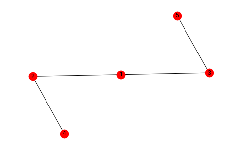
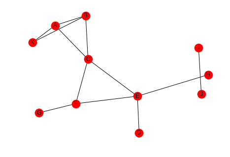
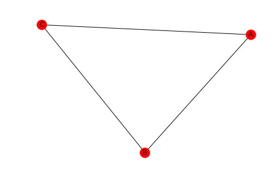
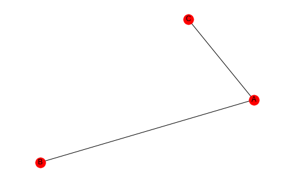
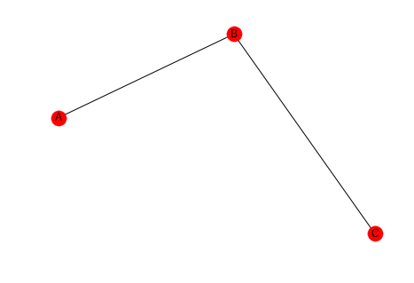
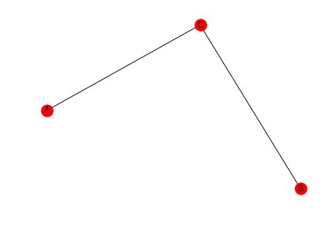
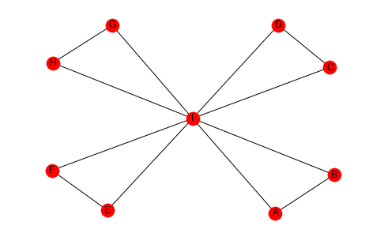
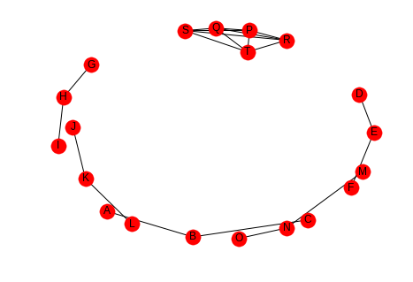

Triadic Closure (Clustering)
Introduction
Triadic Closure is a measure of the tendency of edges in a graph to form triangles. It's a measure of the degree to which nodes in a graph tend to cluster together (wikipedia on clustering coefficents).
# python standard library from fractions import Fraction # pypi import networkx import seaborn
% matplotlib inline seaborn.set_style("whitegrid")
sample_graph = networkx.Graph() sample_graph.add_edges_from([(1, 2), (1, 3), (2, 4), (3, 5)]) networkx.draw_spring(sample_graph, with_labels=True)
In this case we might say that the likelihood that the next edge will be between 1 and 4 or 1 and 5 is greater than the likelihood that it will form between 4 and 5 or 2 and 5.
2 Local Clustering Coefficient
The Local Clustering Coefficient is a measure of clustering for a single node. It is the number of pairs of a node's friends that are themselves friends divided by the total number of pairs of a node's friends. This can be interpreted as measuring how close the node's neighbors are to being a complete graph (wikipedia).
graph = networkx.Graph() graph.add_edges_from([("A", "K"), ("A", "B"), ("A", "C"), ("B", "K"), ("B", "C"), ("C", "E"), ("C", "F"), ("D", "E"), ("E", "F"), ("E", "H"), ("F", "G"), ("I", "J")]) .. ggcode:: ipython networkx.draw_spring(graph, with_labels=True)
The number of pairs of friends can be calculated from the degree of the node.
Looking at node C, it has degree four so the number of pairs of friends it has is \(\frac{4(3)}{2} = 6\). Looking at the graph you can see that there are two edges between the nodes connected to it - (A,B) and (E, F), so the clustering coefficient for node C is \(\frac{PTAF}{POF}=\frac{2}{6}\) which reduces to 1/3. We can double check this with networkx.
print(networkx.clustering(graph, "C"))
0.3333333333333333
If you don't pass in the node label to networkx.clustering the function will return a dictionary with all the clustering coefficients, which might be useful if you need to make multiple queries and have a large graph.
3 The Whole Network
There's two ways to calculate a clustering coefficient for the entire network. One is to take the average of all the local clustering coefficients, the other is to calculate the percentage of open triads (three nodes connected by two edges) that are triangles.
3.1 Averaging
This is what wikipedia calls the network average clustering coefficient.
coefficients = networkx.clustering(graph) average = sum(coefficients.values())/len(coefficients) print(average) assert average == networkx.average_clustering(graph)
0.28787878787878785
3.2 Transitivity
This is also called the global clustering coefficient.
A triangle is a set of three nodes with three edges connecting them. An open triad is a set of three nodes with only two edges connecting them. Each triangle has three open triads embedded in it. Transivity is a measure of the percentage of open triads that are triangles.
This triangle:
triangle = networkx.Graph() triangle.add_edges_from([("A", "B"), ("A", "C"), ("B", "C")]) networkx.draw_spring(triangle, with_labels=True)
Contains these open triads.
one = networkx.Graph() one.add_edges_from([("A", "B"), ("A", "C")]) networkx.draw(one, with_labels=True)
two = networkx.Graph() two.add_edges_from([("A", "B"), ("B", "C")]) networkx.draw(two, with_labels=True)
three = networkx.Graph() three.add_edges_from([("B", "C"), ("A", "C")]) three.add_edges_from([("B", "C"), ("A", "C")]) networkx.draw(three, with_labels=True)
So the transitivity is three times the count of triangles in the graph divided by all the open triads in the graph.
Looking at our earlier example you can see that there are three triangles and thirteen open triads (to be honest I only found 10).
networkx.draw_spring(graph, with_labels=True)
transitivity = (3 * 3)/(3 * 3 + 13) print(transitivity) assert transitivity == networkx.transitivity(graph)
0.4090909090909091
4 Comparing Averaging and Transitivity
4.1 One High Degree Node
high_lcc = networkx.Graph() left = tuple("AABCCDEEFGGH") right = tuple("BIIDIIFIIHII") high_lcc.add_edges_from(list(zip(left, right))) networkx.draw_spring(high_lcc, with_labels=True)
If we look at this graph, the outer nodes all have a clustering coefficient of 1 (each has 1 pair of friends that are friends) while the center node has a coefficient of 1/7, since half the pairs don't have edges between them.
degree_i = 8 pairs_of_friends = Fraction(8 * 7, 2) pairs_that_are_friends = Fraction(4, 1) lcc = pairs_that_are_friends/pairs_of_friends print(lcc)
1/7
Since there are so many nodes with a coefficient of 1, the average is high.
print(networkx.average_clustering(high_lcc))
0.9047619047619047
But there are many open triads so the transitivity will be low (transitivity weights nodes with large degree higher, but there's only one node with degree greater than 2).
print(networkx.transitivity(high_lcc))
0.3333333333333333
4.2 Many Open Pairs
outer_left = "ABDEGHJKMN" inner_left = "PPPPQQQRRS" outer_right = "BCEFHIKLNO" inner_right = "QRSTRSTSTT" left = tuple(outer_left + inner_left) right = tuple(outer_right + inner_right) low_average = networkx.Graph() low_average.add_edges_from(list(zip(left, right))) networkx.draw(low_average, with_labels=True)
Here the nodes P, Q, R, S, and T are completely connected (it's hard to see) but all the other nodes are open triads so the average will be low, but the transitivity will be high, because each of the P, Q, R, S, and T form triangles. This should be easier to see if they are plotted separately.
left = tuple(inner_left) right = tuple(inner_right) inner = networkx.Graph() inner.add_edges_from(list(zip(left, right))) networkx.draw(inner, with_labels=True)

Here's the average clustering coefficient (for the complete graph, not the sub-graph I just made).
print(networkx.average_clustering(low_average))
0.25
And here's the transitivity.
print(networkx.transitivity(low_average))
0.8571428571428571
So which one is the right metric? I guess it just depends.